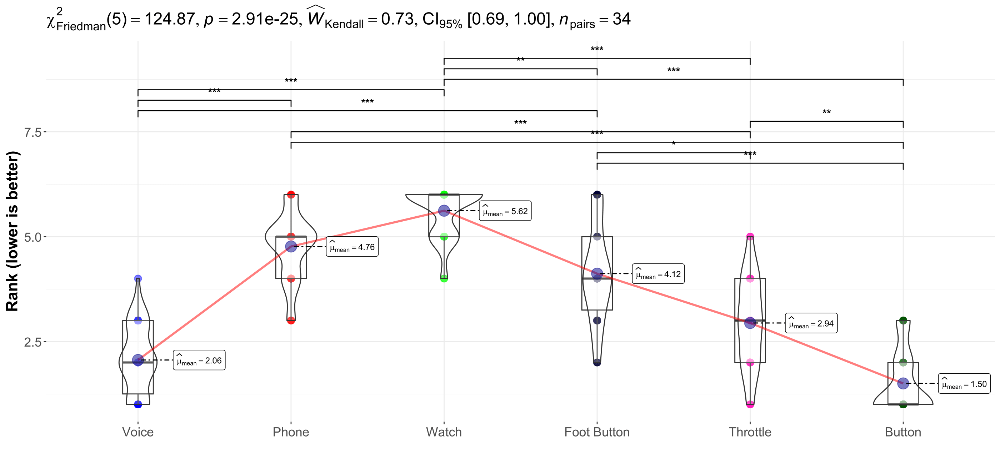
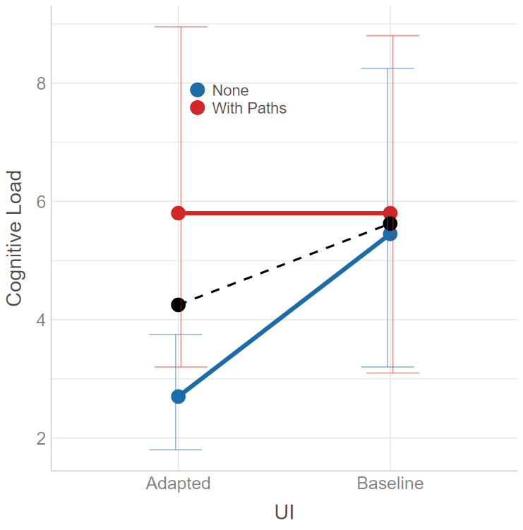
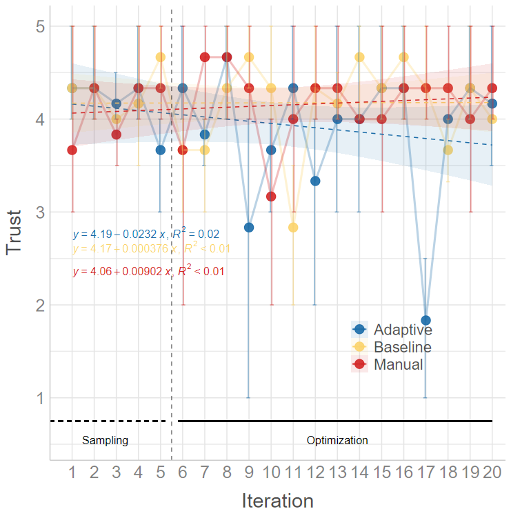

Created by Mark Colley
| Status | Usage | Miscellaneous |
|---|---|---|
colleyRstats is a collection of custom R functions that streamline statistical analysis and result reporting. Built upon popular R packages such as ggstatsplot and ARTool, this collection offers a wide array of tools for simplifying reproducible analyses, generating high-quality visualizations, and producing APA-compliant outputs.
The primary goal of this package is to significantly reduce repetitive coding efforts, allowing you to focus on interpreting results. Whether you’re dealing with ANOVA assumptions, reporting effect sizes, or creating publication-ready visualizations, colleyRstats makes these tasks easier.
Key Features
- Automated Assumption Checking: For ANOVA models, automatically verify normality and homogeneity of variance.
-
Enhanced
ggstatsplotWrappers: Automatically switch between parametric and non-parametric versions of tests based on the data’s characteristics. -
Principled Test Selection:
recommend_test()inspects your data (scale, clustering, assumptions) and recommends the matching model – including mixed models – with a ready-to-edit fit call and methods sentence. - APA-Compliant Reporting: Copy-paste-ready results in LaTeX format, suitable for academic publications; reporters cover ART, Dunn, nparLD, GLMM/CLMM, and ggstatsplot results.
-
One-Call Pipelines:
analyze_and_report()/report_all()produce the figure, methods sentence, omnibus result, and post-hoc comparisons for one or many dependent variables in a single call;emit_overleaf()bundles everything into an Overleaf-ready folder. -
Custom Visualizations: Generate effect plots and multi-objective optimization plots with minimal effort;
save_paper_figure()saves them with publication presets. - Pareto Analysis and Post-Hoc Tests: Automate these analyses and produce formatted outputs.
Installation
| Type | Command |
|---|---|
| Release | install.packages("colleyRstats") |
| Development | remotes::install_github("M-Colley/colleyRstats") |
Getting Started
The vignettes walk through the main workflows end-to-end:
-
vignette("getting-started", package = "colleyRstats")– setup, assumption checks, plotting, and reporting in a nutshell. -
vignette("analyzing-a-user-study", package = "colleyRstats")– a typical (HCI) user study from raw data to manuscript-ready text and figures. -
vignette("choosing-a-test", package = "colleyRstats")– howrecommend_test()selects tests and mixed models, and how to report them. -
vignette("overleaf", package = "colleyRstats")– getting the LaTeX output into an Overleaf project that compiles immediately.
The quickest way to see what the package does is the one-call pipeline:
library(colleyRstats)
result <- analyze_and_report(mtcars, dv = "mpg", iv = "cyl")
result$plot # ggstatsplot figure (parametric/non-parametric auto-selected)
result$sentences # methods sentence + omnibus result + post-hoc comparisonsSession setup
colleyRstats_setup() applies the package’s ggplot2 theme so your figures come out with consistent typography:
It can also register the package’s conflicted preferences – dplyr::filter() over stats::filter(), psych::describe() over Hmisc::describe(), and so on. That part is opt-in, and the call belongs after every library() call in your script:
library(colleyRstats)
library(easystats)
library(dplyr)
colleyRstats_setup(set_conflicts = TRUE) # lastThe ordering matters in both directions. Activating conflicted replaces library() for the rest of the session, and meta-packages such as easystats cannot be attached once it has. And conflicted resolves only those names that are ambiguous among the packages attached at the time, so a call made before the rest of your library() calls has less to work with. See ?colleyRstats_setup.
Summary of Benefits
- Code Reduction: Automates common tasks in data analysis, such as assumption checks and reporting.
- Copy-Paste Ready Outputs: Streamlines report generation with LaTeX-ready text outputs.
- Flexible Visualizations: Customize plots and output professional-quality graphics with ease.
- Easy-to-Update: Modifying analyses or text outputs is simple and consistent.
Primary Functions
Naming. Every function below has a
snake_casename with areport_*/plot_*/check_*prefix, which is the spelling this documentation uses and the one to reach for in new code – the prefixes make the API discoverable through autocomplete. The originalcamelCasespellings –reportART(),generateEffectPlot(),checkAssumptionsForAnova()and the rest – are superseded but remain fully supported and are not going away, so existing scripts keep working unchanged. Both names refer to the same function object and share one help page.
check_assumptions_anova
This function suite checks normality and homogeneity of variance assumptions for ANOVA models. Takes a vector of factors. For details on assumptions checking, refer to Datanovia.
Example:
check_assumptions_anova(data = main_df, y = "dependent_var", factors = c("factor1", "factor2"))
plot_within_stats_asterisk and plot_between_stats_asterisk
These functions include APA-compliant asterisks (e.g., *** for p < 0.001) on your ggwithinstats or ggbetweenstats plots. They automatically adjust for the appropriate test based on the data’s normality.
Note: Avoid using these functions if your data has more than two groups, as geom_signif does not support more than two groups.

plot_effect
Generates a plot that emphasizes either main effects or interaction effects, with clear formatting and options for publication-ready visuals. This function supports customizing group colors, axis labels, and plot size.
Example:
plot_effect(df = main_df, x = "factor1", y = "dependent_var", fillColourGroup = "group", ytext = "Y Label", xtext = "X Label", legendPos = c(0.1, 0.2), shownEffect = "interaction")
reportNPAV
Generates APA-compliant LaTeX output for within-subject designs analyzed using np.anova. The function handles both main and interaction effects. The necessary LaTeX commands are:
\newcommand{\F}[3]{$F({#1},{#2})={#3}$}
\newcommand{\p}{\textit{p=}}
\newcommand{\pminor}{\textit{p$<$}}Deprecated: reportNPAV() is deprecated and will be removed in a future release. Use report_art() with ARTool instead.
Example:
model <- np.anova(tlx_mental ~ factor1 * factor2 + Error(Subject / factor1), data = main_df)
reportNPAV(model, "Dependent Variable")
report_nparld
Reports the model produced by nparLD in APA-compliant format. For factorial non-parametric designs, the Aligned Rank Transform (report_art() with ARTool) is usually the more general choice.
report_mean_sd
For each level of an independent variable, this function calculates the mean and standard deviation of a dependent variable and returns them in APA-compliant LaTeX format:
Example:
report_mean_sd(main_df, iv = "factor1", dv = "dependent_var")
report_dunn_test and report_dunn_test_table
This function summarizes the results of FSA::dunnTest objects in text or table form. Both versions output LaTeX-ready results:
Example:
d <- dunnTest(dependent_var ~ factor1, data = main_df, method = "holm")
report_dunn_test(main_df, d, iv = "factor1", dv = "dependent_var")
report_art
Generates LaTeX-formatted results from art models for factorial designs. The necessary LaTeX commands are:
\newcommand{\F}[3]{$F({#1},{#2})={#3}$}
\newcommand{\p}{\textit{p=}}
\newcommand{\pminor}{\textit{p$<$}}Example:
model <- art(formula = dependent_var ~ factor1 * factor2 + Error(Subject / (factor1 * factor2)), data = main_df)
report_art(anova(model), "Dependent Variable")Follow up significant effects with report_art_con() / report_art_con_table(), which report the pairwise art.con() contrasts as sentences or a LaTeX table (including rank-biserial effect sizes).
add_pareto_emoa_column
This function adds a Pareto front classification column to a dataset, useful in multi-objective optimization scenarios. add_pareto_moocore_column() is the equivalent based on the moocore package (adds a PARETO_MOOCORE column).
Attention: must be done per User - Condition etc group.
Example:
# This would do it over **all** participants and **all** conditions
objectives <- c("objective1", "objective2", "objective3")
main_df <- add_pareto_emoa_column(main_df, objectives)
# This would do it **per** participant and **per** condition combination
# (so far, does not natively support piping ``|>'')
main_df <- main_df |>
group_by(User_ID, ConditionID) |>
mutate(PARETO_EMOA = add_pareto_emoa_column(pick(everything()), objectives = objectives)$PARETO_EMOA) |>
ungroup()
plot_mobo and plot_mobo2
Creates a multi-objective optimization plot, visualizing sampling and optimization phases. This is particularly useful for visualizing iterations in optimization problems. plot_mobo2 is appropriate when using https://github.com/Pascal-Jansen/Bayesian-Optimization-for-Unity/releases starting version 1.1.0.
Example:
plot_mobo2(data = main_df, x = "Iteration", y = "objective1", fillColourGroup = "group", ytext = "Y Axis Label")Example Plot:

animate_mobo2
Writes the same plot as a video, one frame per iteration, so a talk or a supplement can show the run building up instead of only its end state. The axes, phase guides and legend are taken from the complete data, so only the points, intervals and fitted line move. Requires the av package; the file extension picks the container (.mp4, .gif, …).
Example:
animate_mobo2(main_df, x = "Iteration", y = "objective1", filename = "mobo.mp4", ytext = "Y Axis Label")
remove_outliers_REI
Calculates the Response Entropy Index (REI) and flags suspicious entries based on their REI percentile. This function is useful for identifying outliers in Likert scale data.
Example:
result <- remove_outliers_REI(main_df, header = TRUE, variables = "var1,var2,var3", range = c(1, 5))
replace_values
Replaces specified values in a data frame with custom replacements. This can be used to clean or preprocess your data.
Example:
new_df <- replace_values(main_df, to_replace = c("bad_val1", "bad_val2"), replace_with = c("good_val1", "good_val2"))Using NPAV (Lüpsen) with this package
reportNPAV() formats results from Lüpsen’s nonparametric ANOVA (np.anova) output. Deprecated: reportNPAV() is deprecated and will be removed in a future release; use report_art() with ARTool instead. NPAV is not shipped with this package, and it is loaded manually by the user from Lüpsen’s site: https://www.uni-koeln.de/~luepsen/R/.
This step requires internet access, so it is documented here (not in @examples, which should run offline during package checks).
# Download Lüpsen's NPAV bundle (anova.lib) and load it into a dedicated environment
npav_file <- tempfile(fileext = ".lib")
utils::download.file(
url = "https://www.uni-koeln.de/~luepsen/R/anova.lib",
destfile = npav_file,
mode = "wb",
quiet = TRUE
)
npav_env <- new.env(parent = base::emptyenv())
base::load(npav_file, envir = npav_env)
# Example
set.seed(1)
main_df <- data.frame(
UserID = factor(rep(1:12, each = 8)),
Video = factor(rep(c("V1", "V2"), times = 48)),
gesture = factor(rep(c("g1", "g2"), each = 4, times = 12)),
eHMI = factor(rep(c("off", "on"), each = 2, times = 24)),
tlx_mental = rnorm(96)
)
model <- npav_env$np.anova(
tlx_mental ~ Video * gesture * eHMI + Error(UserID / (gesture * eHMI)),
data = main_df
)
reportNPAV(model, dv = "mental workload")If download.file() is blocked in your environment, download anova.lib manually from the NPAV page and point npav_file to the local path
Contact
For questions or remarks, please contact Mark Colley.
Citations
@misc{colley2025rstats,
author = {Mark Colley},
title = {colleyRstats: Functions to Streamline Statistical Analysis and Reporting},
year = {2025},
howpublished = {\url{https://github.com/M-Colley/colleyRstats}},
note = {A collection of custom R functions for streamlining statistical analysis, visualizations, and APA-compliant reporting.},
doi = {10.5281/zenodo.18046754},
url = {https://doi.org/10.5281/zenodo.18046754},
}Contributing
I am happy to receive any bug reports, suggestions, questions, and contributions to fix problems and add features. Please use the GitHub issues system. Pull Requests for contributions are encouraged.
The following presents some simple ways in which you can contribute (in increasing order of commitment):
- Read and correct any inconsistencies in the documentation
- Raise issues about bugs or wanted features
- Review code
- Add new functionality (in the form of new reporting or plotting functions)